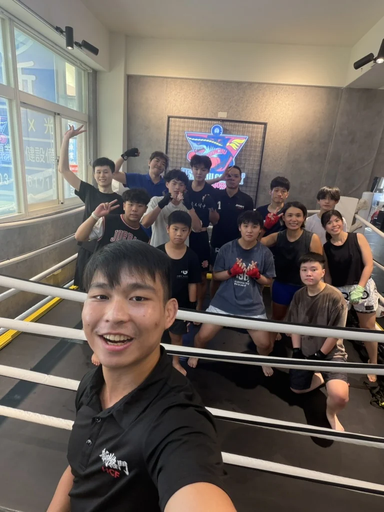

新竹下班學泰拳把第一堂體驗排進你的生活
想在新竹下班後學泰拳，卻擔心加班、交通與跟不上課程。從可到館時段、團課與私人課選擇，到體驗前準備與具體訓練目標，整理上班族開始練習的安排方法。
先找出下班後真正能到館的時間
搜尋新竹下班運動或晚間泰拳課時，最容易先問哪一堂最熱門。對上班族來說，更實際的問題是下班後能不能準時到、臨時加班時有沒有其他選擇，以及練完後是否還有餘裕處理生活。
先列出通常下班的時間，再加上從公司出發的交通、步行、換裝與報到時間。如果從竹北或較遠區域過來，請查實際上課日的路況，不要把平日離峰的車程直接套用到下班尖峰。
- 固定能到的時間 先保留一個最容易做到的時段。
- 可能加班的日子 提前了解取消期限與其他可詢問時段。
- 一週願意投入的天數 依生活實況填寫，不需要一開始就選很多天。
HCF 的最新課表可以用來比對團課時間。體驗表單中的方便時段只是你的偏好，不代表該時段已保留名額。
依時間與教學需求比較團課和私課
| 你的情況 | 可以先了解 | 預約前要確認 |
|---|---|---|
| 下班時間固定 | 符合程度的新手團課 | 當週課表與剩餘名額 |
| 排班或加班較多 | 可協調時段的私人課 | 教練是否有共同可約時間 |
| 想多一點個別提醒 | 一對一私人課 | 希望修正的動作與目前經驗 |
| 想和同事一起練 | 共同團課或一對二私人課 | 兩人的時間與程度能否配合 |
手機可左右滑動表格查看完整內容
完全沒學過泰拳，也可以直接詢問私人課，不必先累積團課經驗。相反地，如果你喜歡一起練習的氣氛，又能配合新手班時間，也不需要因為零基礎就一定選私人課。可以先閱讀團課與私人課比較，再把自己的情況告訴教練。
想和同事或朋友同行，另外整理了一對二私人課安排指南，說明程度不同與臨時缺席時應先確認的事。
把想運動變成教練聽得懂的目標
「想運動」是一個好的開始，但如果能再說清楚希望改變什麼，教練更容易理解你的期待。這不是要求你先懂訓練術語，而是把生活情境和想學的內容講出來。
- 想建立習慣 可以寫希望每週固定一天離開辦公室後來練習。
- 想學會動作 可以寫希望從站姿、出拳與踢腿開始，做錯時有人提醒。
- 想轉換下班心情 可以寫希望留一段專心學動作的時間。
- 已有其他運動經驗 可以說明目前在練什麼，以及希望泰拳課補上哪種學習內容。
「安排我的第一堂體驗」表單有「讓教練更了解我」區塊，可以勾選各目標的細項，並補充期待。這些是討論課程的起點，不是訓練成果的保證。
第一次下班直接到館怎麼準備
先準備方便活動的運動服、水與毛巾，並確認換裝與放置物品的安排。拳套與其他裝備的借用或租借方式，請在預約時確認，不必為了第一堂課急著買齊所有用品。
第一次到 HCF，確認上課時間後請預留 10 到 15 分鐘報到。地址為新竹市北區林森路 301 號 2 樓。出門前查看第一次到館準備與流程，把入口與路線先找好。
若當天因加班可能遲到，請儘早聯絡教練，依館方規則確認能否調整，不要自行認定可以晚到補足時數。也可以在體驗後回想交通是否太趕，再決定下一次適合的時段。
先確認體驗費用再決定後續安排
HCF 官網在本文發布時列出的新生團課體驗為 NT$400，一對一私人課體驗為 NT$1,400，兩者都是一堂 60 分鐘。這是 HCF 的方案資訊，並非所有新竹拳館的價格；最新費用與資格請看課程價目表。
比較後續方案時，除了每堂價格，也要把實際能上幾堂、使用期限、預約規則及裝備費用一起確認。對工作時間不穩定的人，能不能按期使用，往往比單堂看起來便宜更值得先問。
先填寫體驗需求，依畫面到官方 LINE 確認並傳送，讓教練核對形式與時段。填表是提出需求，教練確認課程及時間後，預約才成立。

常見問題
完全沒有運動習慣也能詢問嗎
可以先填寫目前的經驗與訓練目標，讓教練協助選擇適合的開始方式。第一堂不需要先學會拳腿動作，也不用先決定長期方案。
晚間私人課想約幾點都可以嗎
私人課可以提出方便時間，但仍需配合教練可約時段。請提供幾個可行選擇，收到教練確認後才算完成預約。
一週只能來一天可以先體驗嗎
可以先從體驗了解課程，再和教練討論你能維持的頻率。每週天數是安排依據，不應直接當作多久會達成特定成果的保證。
臨時加班可以取消或改約嗎
請在預約或購買方案前向教練確認取消期限、改約方式及缺席處理。不同方案可能有不同條件，不要預設都能免費改約。
延伸閱讀
先安排一堂你真正能到的體驗
填寫你的運動經驗 每週願意投入的天數與方便時間 讓教練協助規劃起點
課程費用與條件核對於 2026 年 11 月 13 日 查看最新價目表 可約時段與預約方式由教練確認